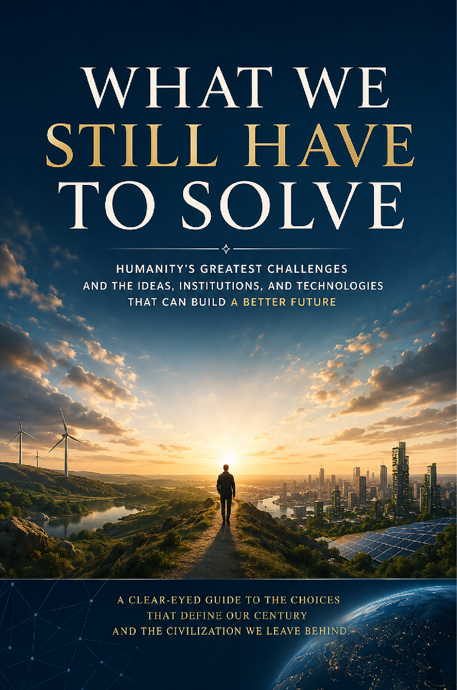

Outfinitist Foundations · Axiologic Research Editions
What We Still Have to Solve
Humanity’s Greatest Challenges and the Ideas, Institutions, and Technologies That Can Build a Better Future
An introduction to the linked material, social, institutional, and technological problems that must be solved together if human progress is to become durable.
Problems inside a coupled civilization
Energy, water, food, health, demography, inequality, governance, work, education, and AI do not arrive as isolated policy folders. Their effects interact through infrastructure, incentives, status, knowledge, and time.
Floors and feedback loops
The book distinguishes the material and human floors beneath any decent society, then follows the feedback loops that turn local success into wider fragility or resilience.
A solution that ignores the system which must carry it is only a postponed problem.
The work that remains
Rather than selling a final blueprint, the book develops a civic and technical agenda: build abundance where it is possible, preserve correction where power concentrates, and keep institutions able to learn.